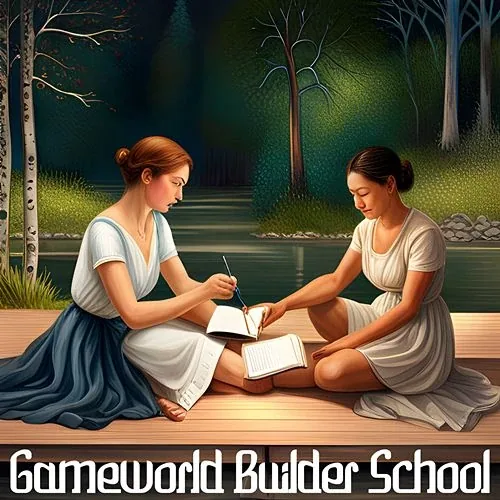
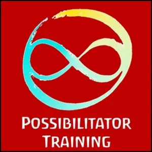

**Gameworld **
Builder School
- …
**Gameworld **
Builder School
- …

- # A Heroic Endeavor- Gameworld Builder School empowers you to reinvent the structures of your life. You need no longer wait around for someone else to build the more wonderful world your heart knows is possible. - The School - Gameworld building is like a car mechanic. It is mechanical. - Building gameworlds follows particular kind of Laws of the Universe that relate to Reality, Creation, Guardianship and Evolution. - Not knowing the Laws does not mean they do not affect you. - As they say, "Ignorance of the law is no excuse." - Playing by a different set of Laws (for example, the Rule of Law of modern culture) gives you very little power in building gameworlds. - Becoming aware Gameworld Building Laws is the first step in recovering your - Authority- [in building gameworlds].- The next step is skill-building and awareness-sharpening to become a - Person of Agencyin the domain of building gameworlds.- After that: it's playtime! - Campus - The Gameworld Builder School has, for now, a virtual campus. A presential campus is gearing up in the form of a Bridge-House Builder School beginning of 2024. - The School's Gameplan - The way to inhabit Archiarchy is to build Archan Gameworlds in which other people can play. - At the same time, people cannot enter Archiarchy as consumers. Therefore, Archan gameworlds are centered on providing a platform for empowering your players' Nonmaterial Value. Your Archan gameworld's service would mostly focus on empowering their Nonmaterial Value to come to life... and for them to eventually build their Archan Gameworld centered on their Nonmaterial Value. - Meaning that the background conversation of your Archan Gameworld is a stepping stone towards Gameworld Building. - The Gameworld Builder School empowers Archan Gameworld to become Gameworld Builder Schools themselves. - There are so many dimensions needed for human beings to be empowered to become Gameworld Builders. You have the key for one or more of those dimensions. - The Curriculum - The way to inhabit Archiarchy is to build your Archan Gameworld in which other people can play. At the same time, people cannot enter Archiarchy as consumers. Therefore, your Archan gameworlds are centered on providing a platform for empowering their Nonmaterial Value. Your Archan gameworld's service will be mostly focus on empowering your people's Nonmaterial Value to come to life... and for them to eventually build their Archan Gameworld centered on their Nonmaterial Value. - There are so many dimensions - Skills - Gameworld building can be the greatest joy, yet not knowing the practicalities of doing it well can be very painful. Together we will empower each other to succeed and practice exercises including: - - What is the context of your gameworld? Your Codex and Rules of Engagement? - - How can you deepen the context of your game world? - - How can you create and weave a Team that will hold space for your gameworld evolution processes? - - How to define and activate the next steps to unfold your gameworld? - - How to face the situation when people in the gameworld want different things? - - How to handle emotional reactivity? - - How to handle value exchange, currencies, and economics? - - How to shift from a Hierarchy that uses Leadership to a Circle that uses Spaceholding? - - What is an 'Infinity Ring'? What is the difference between gameworld decisions and Circle decisions? - - How can your gameworld creatively collaborate with other Gaian Gameworlds around the world? - - What else is possible for your gameworld that you could not imagine yet? - - How to do Legend Making? - - How to build and feed your gameworld support Circle? - Gameworld Builder Training is an intense skill-building and context-shifting training. It is designed for people who are building or wanting to build a Gaian Gameworld. - # Gameworld Builder Training- # Start Your Archan Gameworld- # Take Your Place In Archiarchy- # What Is The Infinity Ring Of A Gameworld?- # Gaian Gameworlds: What are they?- # Gaian Gameworlds: How do they really work?- # (the nitty-gritty)- # Rules of Chaos in Gaian Gameworlds- # Ways to Grow Archiarchy - Experiments- Start your curriculum now!
- ContactSelect... - StartOver.xyz Note - NOTE:This website is a- Bubble in the Bubble Mapof the free-to-play, massively-multiplayer, online-and-offline, thoughtware-upgrade, matrix-building, personal-transformation, adventure-game called- StartOver.xyz. It is a- doorwayto- experimentsthat- upgrade your thoughtwareso you can- createmore- possibility. Your knowledge is what you think- about. Your- thoughtwareis what you use to think- with. When you- change your thoughtware, you go through a- liquid stateas your mind- reorganizesitself. Liquid states can bring up transformational- feelingsand- emotions. By- upgrading your thoughtwareyou- build matrixto hold more- consciousness (archived — not captured)and leave behind a life of- reactivity. No one can upgrade your thoughtware for you. No one can stop you from upgrading your thoughtware. Our theory is that when we- collectively build1,000,000 new Matrix Points we will change the morphogenetic field of the human race for the better. Please choose- responsiblyto read this website. Reading this whole website is worth 1 Matrix Point. Doing any of the experiments earns you additional Matrix Points. Please use Matrix Code GAMESCHO.00 to log your Matrix Point for reading this website on- StartOver.xyz. Thank you for playing full out!